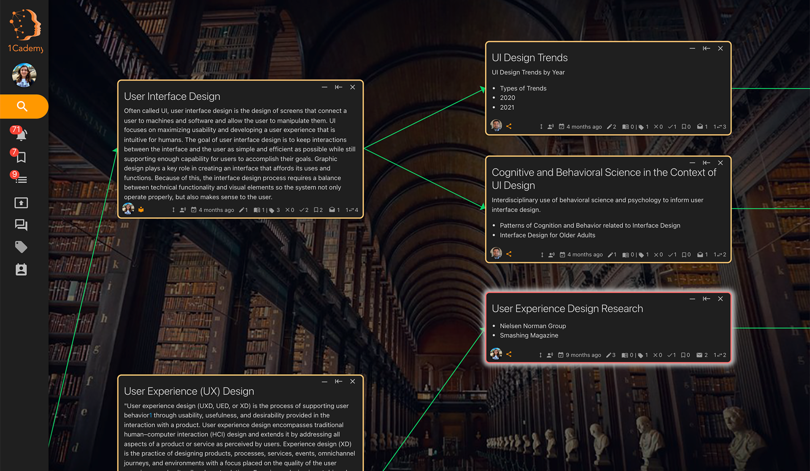
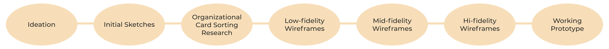
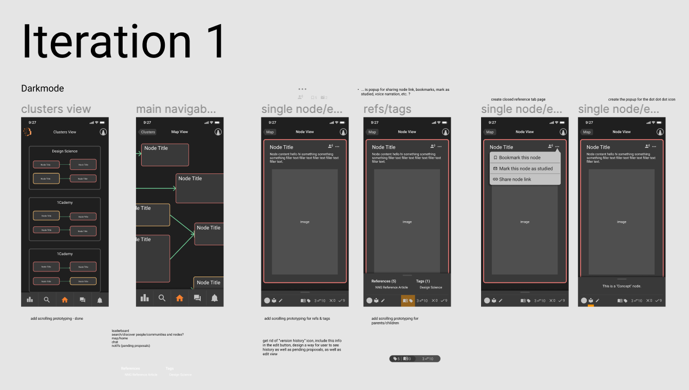
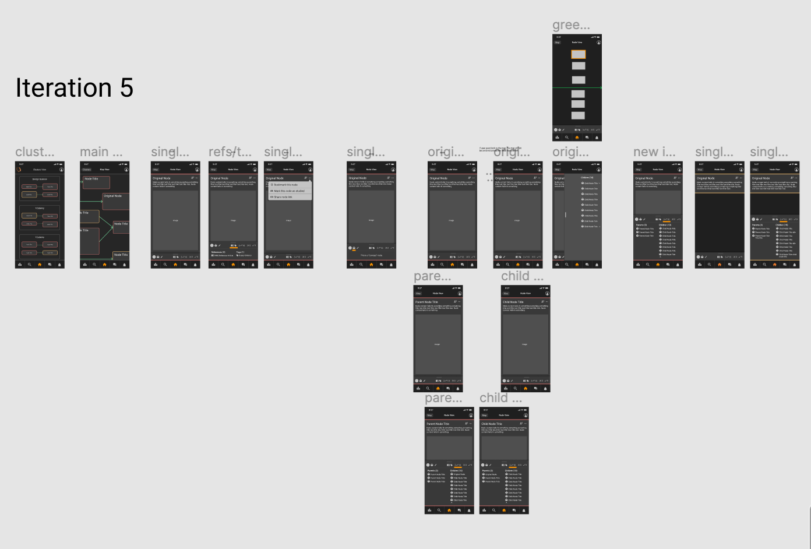

1Cademy Mobile View Prototype
Desktop to Mobile View — UI Project Produced for the Collaborative Research Platform “1Cademy”

Experience Summary
For the past 2 years, I have been the leader of a User Interface Design team that meets weekly to review and discuss user interface improvements for 1Cademy, a developing online research and learning platform. During my time at 1Cademy, I’ve had the privilege of working with many wonderful designers, developers, and peers, on a multitude of projects.
For each design project at 1Cademy, our first step is to establish a team, define the problem, then we typically dive right into low-fidelity wireframes and mockups in order to get feedback and begin the iteration process.
Overview
For this mobile view prototype, we actually had three separate projects come together to create the prototype shown below: the map portion, the user profile, and the user settings. I will focus on the Map portion, as this part presented the most unique challenge for me as a designer.
Problem Statement
Our goal was to take the existing desktop view and reconstruct the information architecture, as well as re-design important user interactions for traversing the map, to develop a mobile view option that retained the integrity and unique functionality of the platform.
The Challenges
The first challenge was re-organizing the information architecture from the sidebar menu shown on the desktop view, to the global navigation in the current mobile view prototype. This required a lot of discussion and understanding of the platform’s features, in order to decide which features needed to remain easily accessible at the highest level of navigation, and which could exist deeper in the hierarchy.
The second challenge was attempting to re-create the map portion of the desktop view — a complex hierarchical structure comprised of extensive knowledge — and make it fit and work on a much smaller mobile view screen in a way that retains as much functionality as possible, and is intuitively navigable.
Process
This project included several steps, though not necessarily in a linear order — the ideation, initial sketches, mid-fidelity and hi-fidelity wireframes all required several iterations of design, discussion, and adjustment. The ideation, initial sketches and card sorting are captured in a FigJam file; the mid- and hi-fidelity design iterations (5 total) are shown in the Figma prototype below.
Open "1Cademy Mobile View Prototype" in Figma →
Project Gallery



Reference Materials
- Early brainstorming (Figma file)